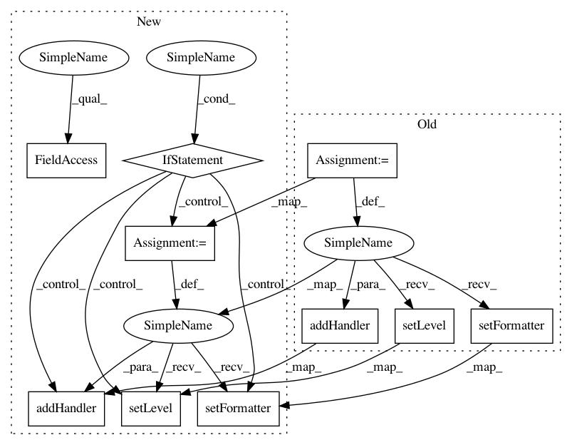

4b272f9938dde90d5fecccfec0689fdffd61d336,autosklearn/util/logging_.py,,get_logger,#Any#Any#,6
Before Change
// Root logger with a stream and file handler
root = logging.getLogger()
console = logging.StreamHandler(stream=sys.stdout)
console.setLevel(logging.INFO)
formatter = logging.Formatter(fmt="real_format: [%(levelname)s] "
"[%(asctime)s:%(name)s]: %(message)s",
datefmt="%m-%d %H:%M:%S")
console.setFormatter(formatter)
root.addHandler(console)
if outputdir is not None:
logger_file = os.path.join(outputdir, "%s.log" % name)
file_handler = logging.FileHandler(filename=logger_file, mode="w")
After Change
if not any([isinstance(handler, logging.StreamHandler) for handler in
root.handlers]):
console = logging.StreamHandler(stream=sys.stdout)
console.setLevel(logging.INFO)
console.setFormatter(formatter)
root.addHandler(console)
if outputdir is not None:
logger_file = os.path.join(outputdir, "%s.log" % name)
add = True
for handler in root.handlers:
if isinstance(handler, logging.FileHandler):
if handler.baseFilename == logger_file:
add = False
In pattern: SUPERPATTERN
Frequency: 3
Non-data size: 10
Instances
Project Name: automl/auto-sklearn
Commit Name: 4b272f9938dde90d5fecccfec0689fdffd61d336
Time: 2015-05-08
Author: feurerm@informatik.uni-freiburg.de
File Name: autosklearn/util/logging_.py
Class Name:
Method Name: get_logger
Project Name: michaelhush/M-LOOP
Commit Name: ef40597a8a5670ece57e80d46c9fe88c7bafa35a
Time: 2016-09-13
Author: MichaelRHush@gmail.com
File Name: mloop/utilities.py
Class Name:
Method Name: _config_logger
Project Name: epfl-lts2/pygsp
Commit Name: 8afad33c65b07c4186cce0430b3c749f87776aaf
Time: 2015-08-06
Author: basile.chatillon@epfl.ch
File Name: pygsp/utils.py
Class Name:
Method Name: build_logger